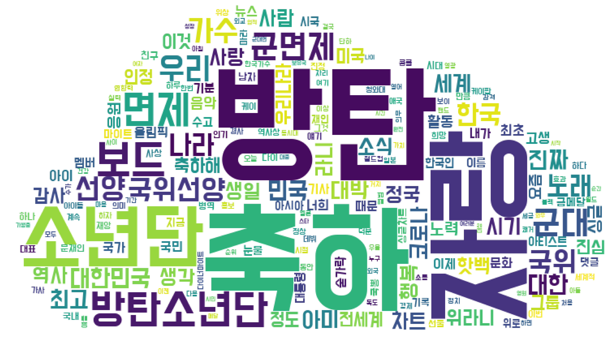
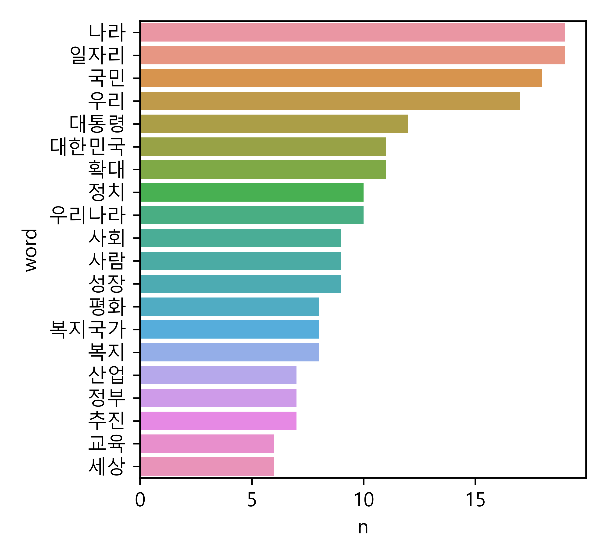
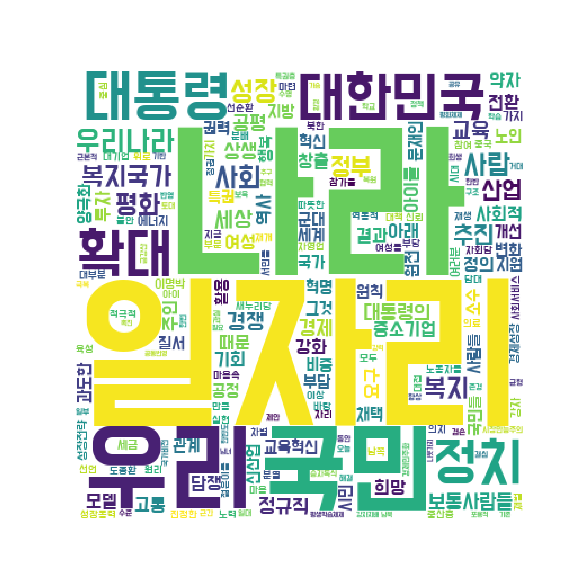
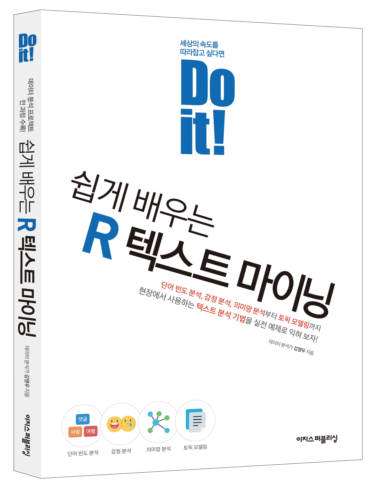

moon = open('speech_moon.txt', encoding = 'UTF-8').read()
moonDo it! 쉽게 배우는 파이썬 데이터 분석
10 텍스트 마이닝

목차
10-1 대통령 연설문 텍스트 마이닝(link)
10-2 기사 댓글 텍스트 마이닝(link)
10-1 대통령 연설문 텍스트 마이닝
형태소 분석(morphology analysis)
- 문장을 구성하는 어절들의 품사를 분석
- 텍스트 마이닝할 때 가장 먼저 하는 작업
- 명사, 동사, 형용사 등 의미를 지닌 품사를 추출해 빈도 확인
문재인 대통령의 출마 선언문
- 대통령 연설문은 문법 오류 없고 문장이 정제됨
- 전처리 작업을 많이 하지 않아도 되므로 텍스트 마이닝 익히는 데 적합
KoNLPy 패키지 설치하기
1. 자바 설치하기
- 윈도우 설정 → 시스템 → 정보 → ‘장치 사양’의 ’시스템 종류’ 에서 운영 체제 버전 확인
- abit.ly/easypy_101에서 운영 체제 버전에 맞는 설치 파일 다운로드, 설치하기
- ‘플랫폼’ 항목에서 맞는 운영 체제 버전 선택
- 64비트: Windows x64
- 32비트: Windows x86
- ‘플랫폼’ 항목에서 맞는 운영 체제 버전 선택
KoNLPy 패키지 설치하기
2. KoNLPy 의존성 패키지 설치하기
pip install jpype1
- 의존성 패키지: 패키지가 의존하는 패키지
- 어떤 패키지는 다른 패키지의 기능을 이용하므로 의존성 패키지를 먼저 설치해야 작동함
KoNLPy의 의존성 패키지인jpype1설치하기
3. KoNLPy 설치하기
pip install konlpy
가장 많이 사용된 단어 알아보기
1. 연설문 불러오기
open()으로 파일을 열고read()로 불러오기encoding = 'UTF-8': 불러올 텍스트 파일의 인코딩을 ’UTF-8’로 지정
'정권교체 하겠습니다!\n 정치교체 하겠습니다!\n 시대교체 하겠습니다!\n \n ‘불비불명(不飛不鳴)’이라는 고사가 있습니다. 남쪽 언덕 나뭇가지에 앉아, 3년 동안 날지도 울지도 않는 새. 그러나 그 새는 한번 날면 하늘 끝까지 날고, 한번 울면 천지를 뒤흔듭니다.\n\n그 동안 정치와 거리를 둬 왔습니다. 그러나 암울한 시대가 저를 정치로 불러냈습니다. 더 이상 남쪽 나뭇가지에 머무를 수 없었습니다. 이제 저는 국민과 함께 높이 날고 크게 울겠습니다. 오늘 저는 제18대 대통령선거 출마를 국민 앞에 엄숙히 선언합니다.\n\n\n‘우리나라 대통령’이 되겠습니다.\n\n\n존경하는 국민 여러분!\n \n 저는 대통령이 되겠습니다. 우리나라 대통령이 되겠습니다. 소수 특권층의 나라가 아니라 보통사람들이 주인인 ‘우리나라’, 네 편 내 편 편가르지 않고 함께 가는 우리나라, ‘우리’라는 말이 조금도 부끄럽지 않은, 진정한 ‘우리나라’의 대통령이 되겠습니다.\n\n지금까지 우리 보통사람들은 날지도 울지도 '2. 불필요한 문자 제거하기
- 특수 문자, 한자, 공백은 분석 대상 아니므로 제거하기
re.sub()으로 한글이 아닌 모든 문자를 공백으로 바꾸기[^가-힣]: ’한글이 아닌 모든 문자’를 의미하는 정규 표현식(regular expression)
'정권교체 하겠습니다 정치교체 하겠습니다 시대교체 하겠습니다 불비불명 이라는 고사가 있습니다 남쪽 언덕 나뭇가지에 앉아 년 동안 날지도 울지도 않는 새 그러나 그 새는 한번 날면 하늘 끝까지 날고 한번 울면 천지를 뒤흔듭니다 그 동안 정치와 거리를 둬 왔습니다 그러나 암울한 시대가 저를 정치로 불러냈습니다 더 이상 남쪽 나뭇가지에 머무를 수 없었습니다 이제 저는 국민과 함께 높이 날고 크게 울겠습니다 오늘 저는 제 대 대통령선거 출마를 국민 앞에 엄숙히 선언합니다 우리나라 대통령 이 되겠습니다 존경하는 국민 여러분 저는 대통령이 되겠습니다 우리나라 대통령이 되겠습니다 소수 특권층의 나라가 아니라 보통사람들이 주인인 우리나라 네 편 내 편 편가르지 않고 함께 가는 우리나라 우리 라는 말이 조금도 부끄럽지 않은 진정한 우리나라 의 대통령이 되겠습니다 지금까지 우리 보통사람들은 날지도 울지도 '3. 명사 추출하기
- 명사를 보면 텍스트가 무엇에 관한 내용인지 파악할 수 있음
['정권교체', '정치교체', '시대교체', '불비불명', '고사', '남쪽', '언덕', '나뭇가지', '년', '동안', '새', '한번', '하늘', '끝', '한번', '천지', '동안', '정치', '거리', '암울한', '시대', '저', '정치', '이상', '남쪽', '나뭇가지', '수', '저', '국민', '오늘', '저', '저', '대', '대통령선거', '출마', '국민', '앞', '선언', '우리나라', '대통령', '존경', '국민', '여러분', '저', '대통령', '우리나라', '대통령', '소수', '특권층', '나라', '보통사람들', '주인', '우리나라', '네', '편', '내', '편', '편가르지', '우리나라', '우리', '라', '말', '진정한', '우리나라', '의', '대통령', '지금', '우리', '보통사람들', '새', '나라', '주인', '행세', '주인', '대접', '말', '몸', '당당', '말', '정치', '참여', '저', '추구', '우리나라', '정치인', '나라', '시민', '정치', '정책과정', '참여', '나라', '저', '시민', '동행', '정치', '저', '추구', '우리나라', '특권', '불평등', '나라', '보통사람들', '기회', '공평', '정의로운', '나라', '권력', '돈', '집단', '나라', '그들', '마음', '시대', '사람들', '희생', '강요', '경제', '정치', '권력', '오늘', '문재인', '우리나라', '우리', '모두', '나라', '선언', '국민', '저', '결심', '이유', '보통사람들', '삶', '우리', '현실', '엄중하기', '때문', '근본적', '혁신', '거대', '전환', '나라', '절박', '때문', '우리', '삶', '우리', '사회', '이상', '경제성장', '과실', '소수', '부유층', '대기업', '창고', '황금', '대부분', '보통사람들', '취업불안', '주거불안', '고용불안', '건강불안', '노후불안', '등', '불안', '이불', '잠자리', '국민', '사람', '사람', '빚', '아이', '일자리', '입시부담', '성적스트레스', '학교폭력', '상처', '영혼들', '하나', '둘', '우리', '곁', '삶', '세상', '분', '들', '약자', '고통', '관심', '정부', '부자', '강자', '기득권', '급급', '정치', '사람들', '희망', '때문', '것', '표정', '사람들', '국민들', '희망', '정치', '절실', '필요', '국민', '뜻', '대통령의', '길', '저', '대선출마', '결심', '국민', '여러분', '출마선언문', '제안', '들', '글', '소중', '의견', '제안', '고단', '삶', '거기', '시민', '한숨', '눈물', '정치', '국민', '걱정거리', '초라한', '정부', '모습', '상식', '사회', '권한', '책', '비례', '사회', '인정', '세상', '개천', '용', '수', '사회', '철학', '나', '약자', '얘', '귀', '사람', '진심어린', '위로', '세상', '세금', '나', '사람', '관대', '힘', '사람', '엄격', '잣대', '적용', '사회', '국민들', '의', '수', '어깨', '대통령', '국민', '정부', '것', '국민', '요구', '미안', '가슴', '평범', '상식적', '요구', '소박한', '요구', '정치', '외면', '것', '국가비전', '공부', '고민', '거창', '국가비전', '국민', '마음속', '겸손', '국민', '마음속', '길', '것', '그것', '대통령의', '길', '국민들', '제', '국민', '뜻', '대통령의', '길', '대한민국', '길', '대한민국', '우리', '거대', '전환', '의', '시', '기존', '과거', '방식', '해결', '수', '근본적', '문제들', '우리', '앞', '지금', '우리', '사회', '지배', '경쟁', '승자독식', '강자지배', '의', '원리', '빈부격차', '확대', '중산층', '서민들', '삶', '기반', '붕괴', '중소기업', '자영업자들', '고통', '지역경제', '낙후', '경제성장', '잠재력', '약화', '악순환', '길', '유럽', '미국', '중국', '인도', '등', '세계', '곳곳', '경제위', '고조', '무분별한', '시장만능주의', '결과', '일부', '기존', '자본주', '모델', '수명', '진단', '과도한', '대외의존형', '경제', '취약', '사회안전망', '대한민국', '위', '무엇', '우리', '개발독재', '모델', '유산', '청산해', '시장만능주의', '대표', '시장독재', '모델', '극복', '개방', '공유', '협동', '공생', '원리', '채택', '인간', '인간답', '수', '민주적', '공정한', '시장경제', '모델', '부', '집안', '평생', '한', '집', '자녀들', '출발선', '불공평', '경쟁', '그것', '교육', '정규직', '중소기업', '지방', '산업', '공정', '경쟁', '노력', '만큼', '정당한', '보상', '세상', '지방대학', '나', '고등학교', '나', '실력', '대접', '수', '누구', '공정', '경쟁', '결과', '승복해', '패자', '따뜻한', '위로', '패자부활', '기회', '경쟁', '소외', '양극화', '살벌한', '세상', '대', '사람', '협력', '성장', '나', '결과', '공유', '지속가능', '삶', '토대', '나라', '저', '나라', '북한', '신뢰', '협력', '토대', '위', '평화', '공동번영', '나라', '저', '나라', '저', '두', '가지', '비전', '상생', '평화', '대한민국', '상생', '평화', '대한민국', '공평', '정의', '바탕', '성장', '과실', '나', '복지', '나', '일자리', '최우선', '나', '아이들', '여성', '노인', '행복', '나', '전', '평화로운', '나라', '것', '공평', '정의', '나라', '근간', '승자독식', '강자지배', '질서', '폐', '대한민국', '상생', '평화', '질서', '수립', '저', '공평', '정의', '원칙', '이명박', '정권', '입', '공정사회', '측근세력들', '국가권력', '사유화', '공공성', '파괴', '토건세력', '재벌집단', '최상위', '계층', '이익', '과도', '공정', '자체', '냉소거리', '신뢰', '상생', '사회', '불가능', '저', '시민들', '균등', '기회', '제공', '공평', '반칙', '특권', '부정부패', '척결', '정', '두', '가지', '가치', '근간', '대한민국', '정의', '원칙', '경제', '분야', '강조', '조세정의', '실현', '소득', '곳', '세금', '원칙', '세금', '불로소득', '정치민주화', '경제민주화', '필요', '재벌', '지배구조', '개선', '공정거래질서', '확립', '대기업', '중소기업', '간', '힘', '불균형', '약자', '억울', '것', '노사', '배', '공동운명체', '노동자들', '부당', '해', '권익', '부당', '침해', '일', '노동자들', '목소리', '적극적', '경영', '반영', '때', '기업', '성', '개선', '소수', '강자', '다수', '위', '군림', '약자', '강자', '공존', '상생', '경제', '질서', '것', '경제민주화', '주요', '내용', '대', '성장전략', '획기적', '국가발전', '선성장', '후분배', '낙수효과', '생각', '사회적', '양극화', '성장잠재력', '저하', '결과', '이', '극복', '성장', '분배', '환경', '평화', '역동적', '선순환', '대', '성장전략', '추진', '첫째', '분배', '재분배', '강화', '중산층', '서민들', '유효수요', '구매력', '확대', '소비', '투자', '촉진', '포용적', '성장', '을', '추진', '이', '최저임금', '생활임금', '개념', '정책', '반영', '복지투자', '확대', '서민경제', '활성화', '것', '재벌', '거대기업', '과도한', '경제력', '집중', '억제', '고용', '대부분', '감당', '중소기업', '성장', '중심', '지원', '사회적', '기업', '협동조합', '육성', '등', '사회적', '경제', '확대', '포용적', '성장', '거시구조적', '개혁', '추진', '둘째', '적', '자본', '투자', '강화', '사람', '중심', '경제성장', '실현', '교육혁신', '학생들', '학부모', '고통', '줄', '입시', '과잉', '학습', '대', '평생학습체제', '자리', '일대', '교육혁신', '문화혁신', '국민', '창조성', '이', '기술혁신', '신산업', '형성', '역동적', '파동', '창조적', '성장', '을', '추진', '셋째', '석유시대', '종말', '대비', '재생', '에너지', '비중', '확대', '녹색', '에너지기술', '것', '축', '전기자동차', '제조', '등', '영역', '신산업', '육성', '생태적', '성장', '을', '추진', '추', '원전', '건설', '중단', '수명', '원전', '가동', '중지', '재생', '에너지', '비중', '확대', '만큼', '원전', '비중', '이', '에너지', '종류', '정도', '산업', '소비생활', '전반', '구조', '저', '차', '산업혁명', '수', '변화', '이', '토건사업', '개발사업', '우위', '정부구조', '재정지출', '구조도', '혁신', '산업', '환경', '농림', '국토', '등', '부처', '지속가능성', '가치', '아래', '재편', '넷째', '인터넷', '를', '전세계', '확산', '소통', '네트워크', '기반', '국경', '경쟁', '집단협업', '개방형', '혁신', '협동생태계', '활용', '협력적', '성장', '을', '추진', '인식', '아래', '한반도평화', '남북협력', '강력', '성장동력', '활용', '남북한', '자원', '기술', '인력', '등', '점', '탁월', '보완관계', '평화', '바탕', '서로', '강점', '동북아시아', '세계', '진출', '복지국가', '를', '담대', '정조대왕', '위', '손해', '아래', '이득', '그것', '국가', '일', '라', '말', '백', '년', '전', '이', '소득재분배', '복지국가', '사상', '위정자', '지구상', '어디', '우리', '복지국가', '담대', '때', '때문', '발걸음', '재촉', '복지', '포퓰리즘', '새누리당', '중상모략', '거부', '부자감세', '사업', '시대착오적', '과오', '청산', '복지국가', '우리', '복지국가', '양극화', '분열', '국가', '절박한', '벌', '나라', '운명', '건곤', '척', '복지', '진정성', '진보세력만', '수', '복지', '낭비', '투자', '사람', '투자', '강력', '성장전략', '복지국가', '국', '경쟁력', '복지', '확대', '보육', '교육', '의료', '요양', '등', '사회서비스', '부문', '일자리', '자영업', '과잉인력', '흡수', '수', '공공임대주택', '주거복지', '것', '월세', '대책', '복지국가', '길', '사람', '투', '일자리', '창출', '자영업', '고통', '경감', '삶', '향상', '등', '조의', '효과', '길', '우리', '보편적', '복지국가', '국민', '것', '년', '뒤', '성과', '것', '일자리', '정부', '로', '일자리', '혁명', '을', '복지', '확대', '저', '강력한', '일자리', '혁명', '을', '젊은이들', '실업자', '정규직', '종사', '근로능력', '고령자들', '일할', '수', '기회', '일자리', '요구', '일자리', '창출', '정규직', '정규직', '전환', '촉진', '정규직', '차별철폐', '근로시간', '축', '신규고용', '확대', '고용영향평가제도', '채택', '고용증진', '기업지원', '연계', '등', '중요', '정책수단', '채택', '정보통신', '산업', '바이오산업', '나노', '산업', '재생에너지', '산업', '문화산업', '콘텐츠산업', '등', '신산업', '일자리', '대대적', '앞', '한', '보육', '교육', '의료', '복지', '등', '사회서비스', '부문', '무궁무진한', '잠재적', '일자리', '보고', '일자리', '곳', '희망', '수', '지방', '일자리', '특별', '노력', '지역균형발전', '산업', '균형', '일자리', '균형', '목표', '이명박', '정부', '방해', '불구', '국민', '세종시', '혁신도시', '지방', '일자리', '창출', '거점', '공기업', '공무원', '지역우대', '채용', '각종', '정부', '지원', '지방채용', '연동제', '확대', '정책', '실효성', '담보', '대통령', '저', '대통령', '직속', '국가일자리위원회', '를', '설치', '일자리점검', '범정부회', '를', '개최', '일자리', '마련', '상황', '점검', '독려', '저', '훗날', '일자리', '혁명', '대통령', '으', '평가', '희망', '아이들', '여성', '노인들', '나라', '아이들', '행복', '나라', '행복', '교육', '학교', '것', '교육혁신', '기본방향', '이', '유아', '초등단계', '과도한', '학습', '부담', '특기적성', '이외', '사교육', '교육', '이념', '전장', '곤란', '교육', '진보', '보수', '아이들', '존재해', '학생', '교사', '학교', '자율성', '창의성', '보장하', '마을', '아이', '수', '지원', '일자리', '산업혁신', '평생학습체제', '뒷받침', '평생학습', '참가율', '선진국', '수준', '리', '우리', '풍요', '어르신들', '희생', '덕분', '노후대비', '겨를', '급격', '가족구조', '변화', '노동시장', '변화', '극심한', '어려움', '사회', '효도', '참여정부', '도입', '기초노령연금', '장기요양보험', '강화', '건강지원', '방법', '차원', '개선', '노인', '일자리', '리', '연륜', '경험', '지역사회', '활용', '수', '방안', '마련', '남녀', '실질적', '평등', '숙제', '가사', '육아', '노인', '책', '여성들', '수준', '여성', '경제활동', '참가율', '세계', '최저', '출산율', '대한민국', '여성들', '말', '가족', '공적서비스', '확대', '여성', '부담', '줄', '취업', '승진기회', '등', '사회적', '차별', '해소', '수', '적극적', '대책', '남녀', '일', '사회', '전진', '대한민국', '한반', '평화', '국가', '존립', '국토방위', '헌법상', '대통령', '막중', '의무', '대외정책', '출발', '튼튼', '국방력', '대한민국', '군', '유능', '군대', '미국과', '관계', '건강', '관계', '발전', '중국', '일본', '러시아', '등', '주변국들', '호혜협력', '관계', '강화', '전쟁', '불안', '한반도', '해방', '이명박', '정부', '파탄', '안보', '새누리당', '정권', '아래', '분쟁', '대결', '휴전선', '일대', '평화경제', '지', '김대중', '대통령의', '공동선언', '노무현', '대통령의', '남북정상선언', '남북', '양측', '책', '이행', '개성공단', '확장', '금강산', '관광', '재개', '금강산', '설악산', '평창', '연결', '국제관광특구', '적극', '남북', '군사대결지대', '공동이익', '창출', '경제지', '전환', '부모들', '안심', '자식', '군대', '안보환경', '특권층', '군대', '안가', '철저', '한편', '젊은이들', '병역', '부담', '사병', '복지', '향상', '북핵문제', '평화적', '해결', '한반', '평화체제', '구축', '저', '북한', '핵', '용인', '수', '확고', '입장', '대화', '협상', '핵', '포기', '실종', '자회담', '재개', '대한민국', '주도적', '역할', '복원', '자회담', '남북관계', '복원', '평화체제', '구축작업', '병행', '추진', '한반도', '평화', '공동번영', '선순환', '구조', '속', '성장동력', '순국선열', '민주영령', '앞', '약속드', '존경', '국민', '여러분', '자리', '애국', '민주', '헌신', '세', '가지', '가치', '숨', '역사', '현장', '저', '역사', '앞', '대통령', '출마선언', '역사', '앞', '저', '자신', '결연', '의지', '역사', '가슴', '미래', '뚜벅뚜벅', '의지', '저것', '수', '벽', '고개', '때', '담쟁', '잎', '담쟁', '잎', '수천', '개', '벽', '도종환', '담쟁', '도종환', '시인', '담쟁', '라', '시', '일부', '우리', '담쟁이', '두', '손', '벽', '특권', '벽', '차별', '벽', '분단', '분열', '벽', '패배주의', '벽', '문재인', '세상', '문', '문재인', '겸손', '권력', '따뜻한', '나라', '국민', '마음', '길', '우리나라', '대통령', '우리', '모두', '주인', '진정한', '우리나라', '대통령']리스트를 다루기 쉽게 데이터 프레임으로 변환하기
4. 단어 빈도표 만들기
str.len(): 글자 수 세기
word n
153 나라 19
462 일자리 19
116 국민 18
422 우리 17
198 대통령 12
.. ... ..
278 북핵문제 1
279 분단 1
281 분야 1
283 분쟁 1
355 수천 15. 단어 빈도 막대 그래프 만들기
맥 사용자는 'Malgun Gothic' 대신 'AppleGothic' 폰트 설정

워드 클라우드 만들기
워드 클라우드(word cloud): 단어의 빈도를 구름 모양으로 표현한 그래프
- 단어의 빈도에 따라 글자의 크기와 색깔을 다르게 표현함
- 어떤 단어가 얼마나 많이 사용됐는지 한눈에 파악할 수 있음
1. wordcloud 패키지 설치하기
pip install wordcloud
wordcloud 패키지 설치 오류 해결하기
wordcloud 패키지 설치 중 다음 에러 메시지가 출력되면 ‘Microsoft Visual C++’ 설치
error: Microsoft Visual C++ 14.0 or greater is required. Get it with “Microsoft C++ Build Tools”
- bit.ly/easypy_103에서 왼쪽 위 [Build Tools 다운로드] 버튼 클릭해 설치 파일을 다운로드
- 설치 파일 실행, 설정 화면에서 왼쪽 위 ‘C++를 사용한 데스트톱 개발’ 체크,
오른쪽 아래 [Install] 클릭해 설치 시작
- 설치 파일 실행, 설정 화면에서 왼쪽 위 ‘C++를 사용한 데스트톱 개발’ 체크,
- 설치 끝나면 아나콘다 프롬프트에서
wordcloud패키지 설치
- 설치 끝나면 아나콘다 프롬프트에서
2. 한글 폰트 설정하기
3. 단어와 빈도를 담은 딕셔너리 만들기
단어는 키(key), 빈도는 값(value)으로 구성된 딕셔너리 만들기
{'나라': 19, '일자리': 19, '국민': 18, '우리': 17, '대통령': 12, '대한민국': 11, '확대': 11, '정치': 10, '우리나라': 10, '사회': 9, '사람': 9, '성장': 9, '평화': 8, '복지국가': 8, '복지': 8, '산업': 7, '정부': 7, '추진': 7, '교육': 6, '세상': 6, '경쟁': 6, '보통사람들': 5, '공평': 5, '경제': 5, '대통령의': 5, '상생': 5, '정규직': 5, '정의': 4, '결과': 4, '사회적': 4, '투자': 4, '주인': 4, '전환': 4, '때문': 4, '모델': 4, '요구': 4, '희망': 4, '창출': 4, '역사': 4, '기회': 4, '여성': 4, '담쟁': 4, '강화': 4, '아래': 4, '고통': 4, '약자': 4, '아이들': 4, '중소기업': 4, '공정': 3, '문재인': 3, '특권': 3, '국가': 3, '사람들': 3, '노인': 3, '변화': 3, '비중': 3, '교육혁신': 3, '관계': 3, '질서': 3, '군대': 3, '지원': 3, '과도한': 3, '권력': 3, '부담': 3, '그것': 3, '지방': 3, '국민들': 3, '채택': 3, '소수': 3, '세계': 3, '신산업': 3, '시민': 3, '개선': 3, '혁신': 3, '혁명': 3, '양극화': 3, '원칙': 3, '활용': 3, '행복': 3, '원전': 3, '에너지': 3, '경제성장': 3, '세금': 3, '이명박': 3, '성장전략': 3, '가치': 3, '가지': 3, '여러분': 3, '강자': 3, '진정한': 2, '노동자들': 2, '마음속': 2, '노력': 2, '만큼': 2, '육성': 2, '모두': 2, '의료': 2, '참여': 2, '지금': 2, '의지': 2, '중심': 2, '역동적': 2, '마련': 2, '마음': 2, '대기업': 2, '위로': 2, '따뜻한': 2, '도종환': 2, '참가율': 2, '여성들': 2, '차별': 2, '담대': 2, '아이': 2, '원리': 2, '대책': 2, '대접': 2, '대부분': 2, '재생': 2, '바탕': 2, '중산층': 2, '실현': 2, '자영업': 2, '북한': 2, '분배': 2, '분열': 2, '정권': 2, '젊은이들': 2, '불안': 2, '남쪽': 2, '성장동력': 2, '자회담': 2, '선언': 2, '적극적': 2, '선순환': 2, '사회서비스': 2, '서민들': 2, '재개': 2, '재벌': 2, '자리': 2, '부문': 2, '부당': 2, '시대': 2, '이상': 2, '중국': 2, '새누리당': 2, '신뢰': 2, '시장만능주의': 2, '반영': 2, '존경': 2, '제안': 2, '정책': 2, '승자독식': 2, '보육': 2, '일대': 2, '복원': 2, '일부': 2, '수준': 2, '수명': 2, '희생': 2, '동안': 2, '오늘': 2, '기반': 2, '금강산': 2, '근본적': 2, '거대': 2, '협력': 2, '근간': 2, '극복': 2, '균형': 2, '결심': 2, '토대': 2, '겸손': 2, '향상': 2, '국가비전': 2, '특권층': 2, '경제민주화': 2, '구조': 2, '해결': 2, '한번': 2, '한반도': 2, '한반': 2, '학습': 2, '과실': 2, '학교': 2, '평생학습체제': 2, '공유': 2, '필요': 2, '평화체제': 2, '포용적': 2, '추구': 2, '공동번영': 2, '남녀': 2, '남북': 2, '가슴': 2, '강력': 2, '강자지배': 2, '기존': 2, '나뭇가지': 2, '촉진': 2, '환경': 2, '기업': 2, '유효수요': 1, '자율성': 1, '운명': 1, '자체': 1, '한반도평화': 1, '잠자리': 1, '우위': 1, '휴전선': 1, '훗날': 1, '자영업자들': 1, '자원': 1, '잠재력': 1, '한숨': 1, '한편': 1, '후분배': 1, '해방': 1, '자신': 1, '자식': 1, '자본주': 1, '자본': 1, '학생들': 1, '장기요양보험': 1, '잠재적': 1, '재촉': 1, '적용': 1, '적극': 1, '요양': 1, '포퓰리즘': 1, '표정': 1, '저하': 1, '풍요': 1, '용인': 1, '저것': 1, '재편': 1, '하나': 1, '학생': 1, '재정지출': 1, '재생에너지': 1, '하늘': 1, '흡수': 1, '재분배': 1, '재벌집단': 1, '학교폭력': 1, '학부모': 1, '자녀들': 1, '잣대': 1, '효도': 1, '입시부담': 1, '해소': 1, '이득': 1, '이익': 1, '이유': 1, '이외': 1, '협동조합': 1, '위정자': 1, '이불': 1, '협력적': 1, '협상': 1, '형성': 1, '유능': 1, '이념': 1, '협동': 1, '호혜협력': 1, '의무': 1, '유럽': 1, '확고': 1, '의견': 1, '유산': 1, '유아': 1, '육아': 1, '확립': 1, '확산': 1, '협동생태계': 1, '월세': 1, '입장': 1, '활성화': 1, '확장': 1, '효과': 1, '입시': 1, '일할': 1, '일자리점검': 1, '행세': 1, '획기적': 1, '황금': 1, '헌법상': 1, '일본': 1, '헌신': 1, '이행': 1, '인터넷': 1, '전기자동차': 1, '인정': 1, '인식': 1, '현실': 1, '인력': 1, '인도': 1, '인간답': 1, '인간': 1, '현장': 1, '혁신도시': 1, '철학': 1, '포기': 1, '출발': 1, '진단': 1, '직속': 1, '출마선언': 1, '지역우대': 1, '지역사회': 1, '출마선언문': 1, '지역균형발전': 1, '지역경제': 1, '외면': 1, '지속가능성': 1, '지속가능': 1, '지배구조': 1, '지배': 1, '탁월': 1, '지방채용': 1, '지방대학': 1, '출발선': 1, '출산율': 1, '취약': 1, '취업': 1, '취업불안': 1, '측근세력들': 1, '지구상': 1, '중지': 1, '중요': 1, '침해': 1, '출마': 1, '진보': 1, '진보세력만': 1, '진심어린': 1, '천지': 1, '첫째': 1, '척결': 1, '채용': 1, '창조적': 1, '창조성': 1, '청산': 1, '청산해': 1, '창의성': 1, '창고': 1, '참여정부': 1, '초등단계': 1, '초라한': 1, '차원': 1, '차별철폐': 1, '집중': 1, '집안': 1, '집단협업': 1, '최상위': 1, '집단': 1, '진출': 1, '최우선': 1, '최저': 1, '최저임금': 1, '진정성': 1, '콘텐츠산업': 1, '중상모략': 1, '전반': 1, '평생학습': 1, '패자부활': 1, '편가르지': 1, '정조대왕': 1, '평가': 1, '정의로운': 1, '평등': 1, '정부구조': 1, '평범': 1, '정보통신': 1, '평생': 1, '정도': 1, '정당한': 1, '평창': 1, '토건사업': 1, '정권교체': 1, '점검': 1, '평화경제': 1, '절실': 1, '절박한': 1, '철저': 1, '평화로운': 1, '평화적': 1, '전진': 1, '전쟁': 1, '전장': 1, '전세계': 1, '패자': 1, '패배주의': 1, '파탄': 1, '정책과정': 1, '중단': 1, '토건세력': 1, '주요': 1, '주변국들': 1, '주도적': 1, '주거불안': 1, '주거복지': 1, '종사': 1, '종말': 1, '종류': 1, '존재해': 1, '존립': 1, '특기적성': 1, '조의': 1, '조세정의': 1, '제조': 1, '특별': 1, '제공': 1, '정치인': 1, '정치민주화': 1, '정치교체': 1, '튼튼': 1, '파괴': 1, '정책수단': 1, '파동': 1, '절박': 1, '가동': 1, '영혼들': 1, '과잉': 1, '권익': 1, '권한': 1, '균등': 1, '그들': 1, '극심한': 1, '근로능력': 1, '근로시간': 1, '급격': 1, '급급': 1, '기득권': 1, '기본방향': 1, '기술': 1, '기술혁신': 1, '기업지원': 1, '기초노령연금': 1, '군사대결지대': 1, '군림': 1, '국토방위': 1, '구축': 1, '관광': 1, '관대': 1, '관심': 1, '교사': 1, '구매력': 1, '구조도': 1, '구축작업': 1, '국토': 1, '국가권력': 1, '국가발전': 1, '국가일자리위원회': 1, '국경': 1, '국방력': 1, '국제관광특구': 1, '김대중': 1, '나노': 1, '낙수효과': 1, '대대적': 1, '눈물': 1, '다수': 1, '담보': 1, '담쟁이': 1, '당당': 1, '대결': 1, '대비': 1, '농림': 1, '대선출마': 1, '대외의존형': 1, '대외정책': 1, '대통령선거': 1, '대표': 1, '대화': 1, '누구': 1, '녹색': 1, '낙후': 1, '냉소거리': 1, '남북관계': 1, '남북정상선언': 1, '남북한': 1, '남북협력': 1, '낭비': 1, '내용': 1, '네트워크': 1, '노후불안': 1, '넷째': 1, '노동시장': 1, '노무현': 1, '노사': 1, '노인들': 1, '노후대비': 1, '과잉인력': 1, '과오': 1, '도입': 1, '과도': 1, '거대기업': 1, '거리': 1, '거부': 1, '거시구조적': 1, '거점': 1, '거창': 1, '걱정거리': 1, '건강': 1, '건강불안': 1, '건강지원': 1, '건곤': 1, '건설': 1, '겨를': 1, '결연': 1, '경감': 1, '거기': 1, '개혁': 1, '개최': 1, '강점': 1, '가족': 1, '가족구조': 1, '각종': 1, '감당': 1, '강력한': 1, '강요': 1, '강조': 1, '개천': 1, '개념': 1, '개발독재': 1, '개발사업': 1, '개방': 1, '개방형': 1, '개성공단': 1, '경영': 1, '경쟁력': 1, '경제력': 1, '공부': 1, '공공임대주택': 1, '공기업': 1, '공동선언': 1, '공동운명체': 1, '공동이익': 1, '공무원': 1, '공생': 1, '곳곳': 1, '공적서비스': 1, '공정거래질서': 1, '공정사회': 1, '공정한': 1, '공존': 1, '과거': 1, '공공성': 1, '곤란': 1, '경제위': 1, '고등학교': 1, '경제지': 1, '경제활동': 1, '경험': 1, '계층': 1, '고개': 1, '고단': 1, '고령자들': 1, '고조': 1, '고민': 1, '고사': 1, '고용': 1, '고용불안': 1, '고용영향평가제도': 1, '고용증진': 1, '덕분': 1, '독려': 1, '영역': 1, '상식': 1, '소득재분배': 1, '소박한': 1, '소비': 1, '소비생활': 1, '소외': 1, '소중': 1, '소통': 1, '손해': 1, '수립': 1, '가사': 1, '숙제': 1, '순국선열': 1, '승복해': 1, '승진기회': 1, '시대교체': 1, '소득': 1, '셋째': 1, '세종시': 1, '서민경제': 1, '상처': 1, '상황': 1, '생각': 1, '생태적': 1, '생활임금': 1, '서로': 1, '석유시대': 1, '성적스트레스': 1, '선성장': 1, '선진국': 1, '설악산': 1, '설치': 1, '성과': 1, '성장잠재력': 1, '시대착오적': 1, '시민들': 1, '시인': 1, '엄격': 1, '어디': 1, '어려움': 1, '어르신들': 1, '억울': 1, '억제': 1, '언덕': 1, '엄중하기': 1, '양측': 1, '에너지기술': 1, '역할': 1, '연결': 1, '연계': 1, '연동제': 1, '연륜': 1, '어깨': 1, '약화': 1, '시장경제': 1, '실효성': 1, '시장독재': 1, '신규고용': 1, '실력': 1, '실업자': 1, '실종': 1, '실질적': 1, '악순환': 1, '약속드': 1, '안가': 1, '안보': 1, '안보환경': 1, '안심': 1, '암울한': 1, '애국': 1, '상식적': 1, '살벌한': 1, '동북아시아': 1, '산업혁신': 1, '미래': 1, '미안': 1, '민주': 1, '민주영령': 1, '민주적': 1, '바이오산업': 1, '반칙': 1, '발걸음': 1, '발전': 1, '방법': 1, '방식': 1, '방안': 1, '방해': 1, '범정부회': 1, '병역': 1, '미국과': 1, '미국': 1, '문화혁신': 1, '막중': 1, '동행': 1, '둘째': 1, '뒷받침': 1, '뚜벅뚜벅': 1, '러시아': 1, '마을': 1, '모습': 1, '문화산업': 1, '목소리': 1, '목표': 1, '무궁무진한': 1, '무분별한': 1, '무엇': 1, '문제들': 1, '병행': 1, '보고': 1, '보상': 1, '빈부격차': 1, '불로소득': 1, '불비불명': 1, '불평등': 1, '붕괴': 1, '비례': 1, '비전': 1, '사교육': 1, '불구': 1, '사병': 1, '사상': 1, '사업': 1, '사유화': 1, '사회안전망': 1, '산업혁명': 1, '불균형': 1, '불공평': 1, '보수': 1, '부자': 1, '보완관계': 1, '보장하': 1, '보편적': 1, '복지투자': 1, '부모들': 1, '부유층': 1, '부자감세': 1, '불가능': 1, '부정부패': 1, '부처': 1, '북핵문제': 1, '분단': 1, '분야': 1, '분쟁': 1, '수천': 1}4. 워드 클라우드 만들기
4. 워드 클라우드 만들기

워드 클라우드 만들 때 주의하기
- 워드 클라우드 이미지 출력 코드는 한 셀에 넣어 함께 실행해야 함
WordCloud()는 실행할 때마다 난수를 이용해 워드 클라우드를 매번 다른 모양으로 만듦- 항상 같은 모양으로 만들려면
random_state를 이용해 난수를 고정 하고,wc만드는 코드를 먼저
실행한 다음wc.generate_from_frequencies()를 실행해야 함
워드 클라우드 모양 바꾸기
1. mask 만들기
이미지 파일 불러오기

mask 만들기
2. 워드 클라우드 만들기
mask = img:mask적용하기
2. 워드 클라우드 만들기

워드 클라우드 색깔 바꾸기
colormap = 'inferno': 워드 클라우드에inferno컬러맵 적용- 컬러맵(colormaps): 색깔 목록
워드 클라우드 색깔 바꾸기

워드 클라우드는 좋은 그래프인가?
- 워드 클라우드는 분석 결과를 정확하게 표현하는 그래프는 아님
- 단어 빈도를 크기와 색으로 표현하므로 ‘어떤 단어가 몇 번 사용됐는지’ 정확히 알 수 없음
- 단어 배치가 산만해서 ‘어떤 단어가 다른 단어보다 얼마나 더 많이 사용됐는지’ 비교하기 어려움
- 아름답게 표현하는 게 아니라 정확하게 표현하려면 워드 클라우드보다 막대 그래프를 이용
10-2 기사 댓글 텍스트 마이닝
가장 많이 사용된 단어 알아보기
1. 기사 댓글 불러오기
'news_comment_BTS.csv': 방탄소년단 ‘빌보드 핫 100 차트’ 1위 소식을 다룬 네이버 뉴스 기사 댓글
<class 'pandas.core.frame.DataFrame'>
RangeIndex: 1200 entries, 0 to 1199
Data columns (total 5 columns):
# Column Non-Null Count Dtype
--- ------ -------------- -----
0 reg_time 1200 non-null object
1 reply 1200 non-null object
2 press 1200 non-null object
3 title 1200 non-null object
4 url 1200 non-null object
dtypes: object(5)
memory usage: 47.0+ KB2. 불필요한 문자 제거하기
reply는 데이터 프레임에 담겨 있는 변수이므로str.replace()를 사용해 불필요 문자 제거
3. 명사 추출하기
- 꼬꼬마(Kkma) 형태소 분석기 이용해 명사 추출
- 띄어쓰기 오류 있는 문장에서도 형태소를 잘 추출하는 장점이 있음
- 댓글처럼 정제되지 않은 텍스트 분석에 적합
Kkma()의 첫 글자 K 대문자 주의
명사 추출
reply는 데이터 프레임에 들어 있는 변수이므로kkma.nouns()에 바로 적용할 수 없음- 함수가 각 행의 값을 따로따로 처리하도록
apply()사용
0 [국보, 국보소년단, 소년단]
1 [아줌마]
2 [팩트, 팩트체크, 체크, 보드, 위, 방탄, 방탄소년단, 소년단]...
3 [방탄, 방탄소년단, 소년단, 한국, 한국사람, 사람, 자랑, 우리, 하자]...
4 [월드, 클래스, 소식, 응원]
...
1195 []
1196 [우리, 탄, 자랑, 사랑]
1197 [애, 군대]
1198 [군, 군면제급, 면제, 급]
1199 [자랑, 축하, 김, 김남, 남, 김석진, 민, 민윤기, 윤기, 정, 정호석, 호석...
Name: reply, dtype: object4. 단어 빈도표 만들기
nouns는 행마다 여러 단어가 리스트 자료 구조로 들어 있음df.explode()를 이용해 한 행에 한 단어만 들어가도록 변경
# 데이터 프레임 만들기
df_word = pd.DataFrame({'word' : nouns})
# 글자 수 추가
df_word['count'] = df_word['word'].str.len()
# 두 글자 이상 단어만 남기기
df_word = df_word.query('count >= 2')
df_word word count
0 국보 2.0
0 국보소년단 5.0
0 소년단 3.0
1 아줌마 3.0
2 팩트 2.0
... ... ...
1199 박지 2.0
1199 박지민 3.0
1199 김태형 3.0
1199 전정국 3.0
1199 정국 2.0 word n
752 방탄 280
1878 축하 236
1556 자랑 205
1032 소년단 144
763 방탄소년단 136
... ... ...
1136 실력있음 1
406 다음주면 1
1134 신화 1
1133 신중 1
1084 스을적 15. 단어 빈도 막대 그래프 만들기

워드 클라우드 만들기

텍스트 마이닝 더 알아보기
다양한 형태소 분석기 이용하기
KoNLPy를 이용하면 한나눔, 꼬꼬마 외에도 다양한 형태소 분석기를 이용할 수 있음- 명사뿐 아니라 동사, 형용사 등 다양한 품사를 추출할 수 있음
KoNLPy공식 문서: konlpy.org/ko/latest
텍스트 마이닝 자세히 익히기

- Do it! 쉽게 배우는 R 텍스트 마이닝》:
yes24.com/Product/Goods/97126355